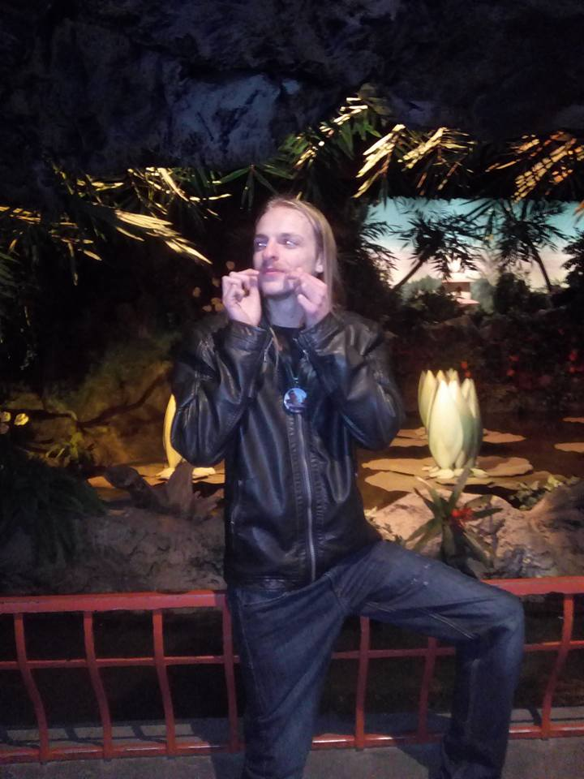
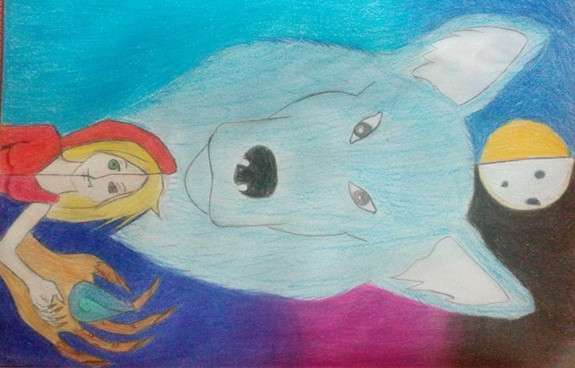
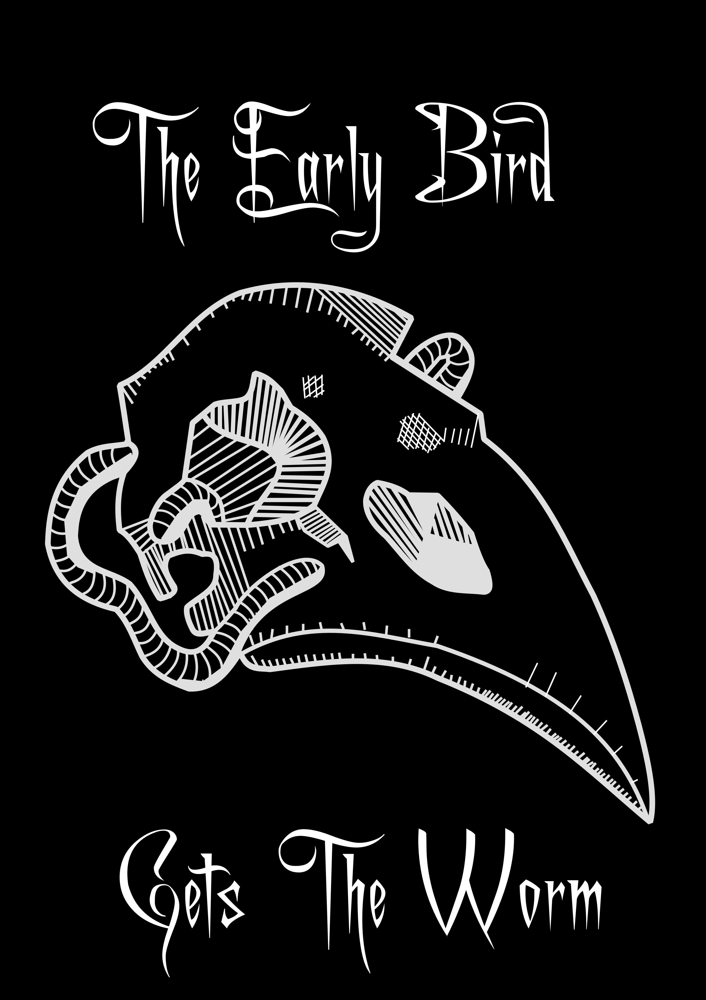
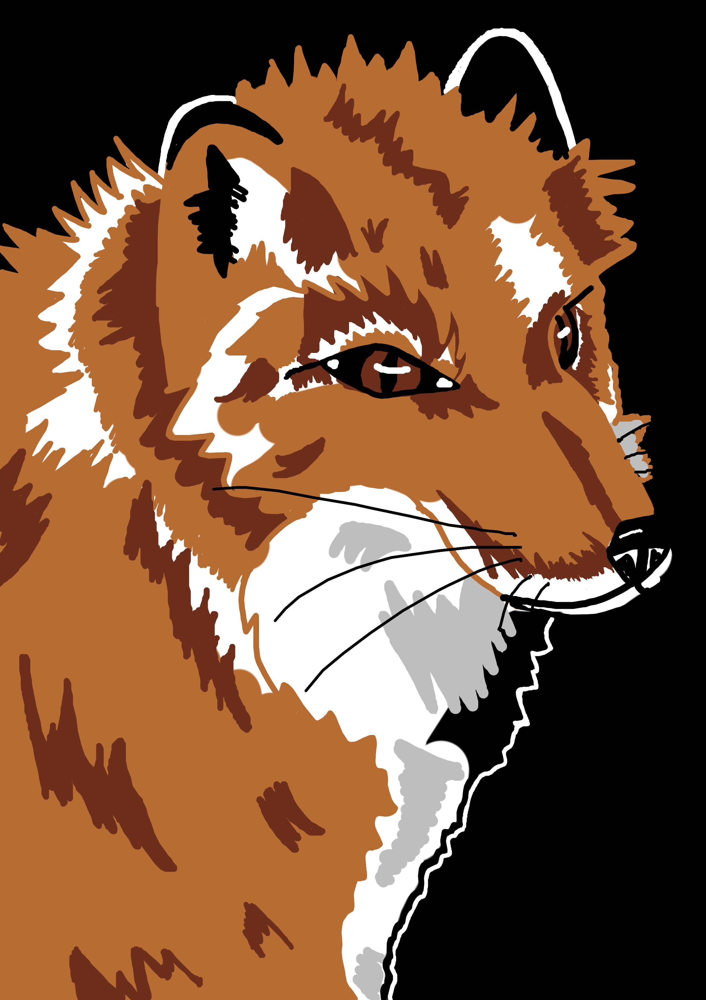

It's passion lays between playing games, drawing and escaping the daily life with cartoons.
Whilst she was playing a game of League Of Legends she met some people she could call her friends.
Later she found interest in one particular fellow named Bradley.

Do not Share the information about this picture ... I do not have his consent to show it.
Moving on ...
whilst gaming was still in her mind, her passion for drawing grew.

...luckily it got better ovre time, because practice makes perfect!
 


Still need a little more practice if you want my opinion.